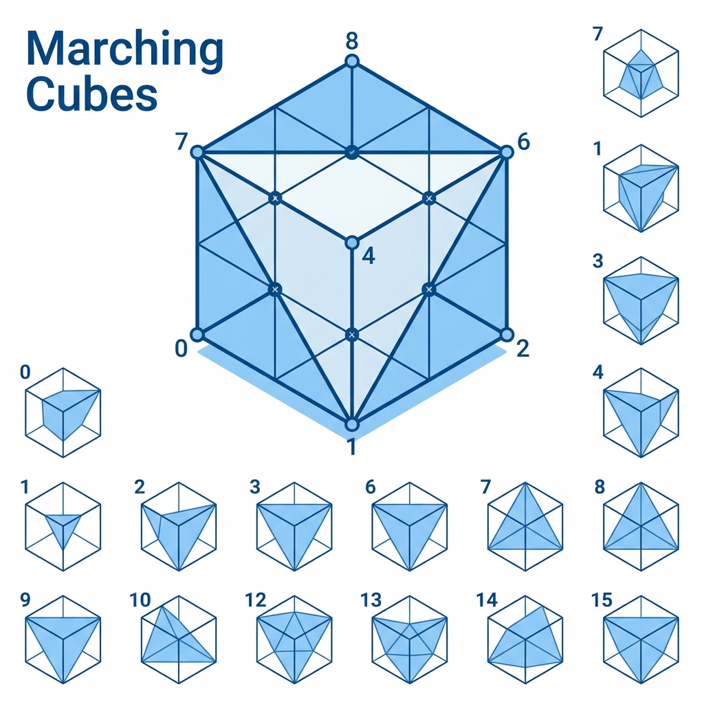

本讲义基于 Steve Marschner & Peter Shirley 所著《虎书》（Fundamentals of Computer Graphics）第5版第21章（p.613-639）隐式建模。
以场函数描述几何——Blinn blob/Wyvill六次多项式/SDF距离场、Ricci混合/Marching Cubes 15 种配置、BlobTree 层次结构、光线步进求交。
本版插画采用 Guizang 材质插画风格重新绘制。

前述章节的几何表示主要是显式的：参数曲面 p(u,v) 或三角形网格，直接给出曲面上的每个点。而隐式表示（Implicit Representation）截然不同——它用一个标量函数 f : ℝ³ → ℝ 的零等值面来定义曲面。
隐式曲面的精确定义：
S = { p ∈ ℝ³ | f(p) = 0 }
曲面 S 是标量场 f 的零水平集 (Zero Level Set)
══════════════════════════════════════════════ 隐式曲面 (Implicit Surface) — 正式定义 ══════════════════════════════════════════════ // 标量场 f : ℝ³ → ℝ 在全空间每点赋一个实数值 // 零等值面（Zero Isosurface）即隐式曲面： S = { p ∈ ℝ³ | f(p) = 0 } // 空间三区域划分： f(p) < 0 → p 位于物体内部 (Interior) f(p) = 0 → p 位于物体曲面上 (Surface) f(p) > 0 → p 位于物体外部 (Exterior) // 梯度给出曲面法向量方向： ∇f(p) = ( ∂f/∂x , ∂f/∂y , ∂f/∂z )ᵀ // 单位法向量 (假定 ||∇f|| ≠ 0)： n̂(p) = ∇f(p) / ||∇f(p)|| // 隐式曲面的数学优势： // • 内/外判定 O(1)：仅需计算 f(p) 的符号 // • CSG 布尔操作 O(1)：min/max 即得结果 // • 拓扑变化自然：场值连续变化 → 曲面自动融合/分裂 // • 碰撞检测极速：有 SDF 时 f(p) 即到曲面距离
曲面将空间划分为三个区域：
f(p) < 0 — 内部（物体内部）
f(p) = 0 — 曲面（零等值面）
f(p) > 0 — 外部（物体外部）
这一约定虽非强制，但在 CSG 操作中极为便利：并取 min 等价于"内部区域的并集"，交取 max 等价于"内部区域的交集"。
梯度（Gradient）给出了曲面在每个点的朝向：
∇f(p) = ( ∂f/∂x , ∂f/∂y , ∂f/∂z )ᵁ
梯度方向指向 f 增加最快的方向，即从内部指向外部
向量 ∇f(p) 在 f(p)=0 上垂直于曲面，提供了该点的法向量（未归一化时）。与参数表示不同，隐式表示不需要显式存储法线——它在任何点都可通过偏导数计算得到。
类比·隐式 = 等高线地图：等高线地图上的每条闭合曲线满足"海拔 = 某常数"。隐式曲面就是三维空间中的一张"零海拔等高面"：f(x,y,z)=0。改变等值参数，就得到山体的不同"切片"。梯度则是每个位置上山的"最陡方向"。
| 特性 | 显式（参数/网格） | 隐式 f(x,y,z)=0 |
|---|---|---|
| 采样曲面点 | 容易——直接代入 u,v | 困难——需要求根（光线步进/Marching Cubes） |
| 判断内外 | 困难——需要射线投射数奇偶 | 容易——直接计算 f(p) 的符号 |
| 布尔操作 | 困难——需要精确求交+重网格化 | 容易——min/max 操作即得结果 |
| 平滑混合 | 困难——需要桥接面+过渡几何 | 天然支持——场值连续叠加 |
| 碰撞检测 | O(n) 三角面遍历 | O(1) 求值 f(p)（有 SDF 时） |
| 纹理映射 | 容易——u,v 域天然存在 | 困难——需要参数化转换 |
| 存储 | 显式存储顶点和面（MB 级） | 存储函数参数（KB 级） |
| 拓扑变化 | 困难——需要重构连通性 | 天然支持——场值连续变化自动融合 |
构造隐式曲面时，在空间中放置若干骨架图元（Skeletal Primitives），每个贡献一个标量场。图元的场函数在骨架中心处取最大值，随距离单调衰减至零。
最基础的图元是点骨架（Blob），由位置 c 定义。1982年，Blinn 受电子密度云启发，提出用高斯函数定义场：
Blinn 高斯 blob：
f(p) = a · exp( −b · ||p − c||² )
a 控制振幅（高度），b 控制衰减速度（宽度）
引入阈值 T 后定义等值面：
F(p) = a · exp( −b · r² ) − T
r = ||p − c|| 为到骨架中心的欧氏距离
令 F(p) = 0 解出等值面的有效半径：
推导·有效半径 R：
从 a · exp(−b · R²) = T 解得：
R = √( ln(a/T) / b )
超出此半径 f(p) 衰减极快但永不为零——高斯函数具有无限支撑（Infinite Support），意味着每个 blob 理论上影响全空间。这对大规模场景的效率极为不利。
Blinn 模型的梯度：
∇f(p) = −2ab · (p − c) · exp( −b · ||p − c||² )
与参数 b 成正比——b 越大衰减越快，梯度越陡峭。这对数值稳定性有直接影响：b 过大时等值面附近场值急剧变化，使 Marching Cubes 的线性插值假设失效，需极小体素才能准确捕获。
Wyvill 兄弟（1986）提出用紧致支撑（Compact Support）多项式替代高斯函数，彻底解决效率问题：
Wyvill 六次多项式：
f(r) = ( 1 − r² / R² )³ （r ≤ R）
f(r) = 0 （r > R）
r = ||p − c|| 为到骨架中心距离，R 为支撑半径
Wyvill 多项式的展开形式（令 R=1）——多项式系数的精确值决定函数在支撑边界的各阶光滑性：
// Wyvill 六次多项式 — 紧致支撑 C² 场函数 // 原始形式：f(r) = (1 - r²)³ (0 ≤ r ≤ 1) // 展开形式揭示各阶导数连续性： f(r) = 1 - 3r² + 3r⁴ - r⁶ // 另一种常用归一化形式 (Wyvill et al. 1986)： f(r) = 1 - (22/9)r² + (17/9)r⁴ - (4/9)r⁶ // 等价变形：f(r) = 4r⁶/9 - 17r⁴/9 + 22r²/9 (归一化形式，值域 [0,1]) // 各阶导数在 r=0 处的值： f(0) = 1 // 峰值 f'(0) = 0 // 平滑顶部 (一阶导为零) f''(0) = -6/R² // 有限曲率 // 各阶导数在 r=R 处的值 (紧致支撑的关键)： f(R) = 0 // 边界值为零 f'(R) = 0 // 一阶导连续为零 → C¹ f''(R) = 0 // 二阶导连续为零 → C² (视觉无折痕)
关键性质——在边界 r=R 处的连续性分析：
推导·Wyvill 函数在 r=R 处的 C¹ 连续性：
令 u = r²/R²，则 f(u) = (1 − u)³
一阶导数：df/dr = df/du · du/dr = 3(1−u)² · (−1) · 2r/R² = −(6r/R²)(1 − r²/R²)²
在 r=R 处：f(R) = 0，f'(R) = −(6R/R²)(0)² = 0
二阶导数：f''(r) = d/dr[−(6r/R²)(1−r²/R²)²] = −(6/R²)(1−5r²/R²)(1−r²/R²)
在 r=R 处：f''(R) = −(6/R²)(1−5)(0) = 0
结论：f(R) = f'(R) = f''(R) = 0，函数在边界处具有 C² 连续性（二阶导数连续），保证与零场平滑衔接，无视觉伪影。
函数在中心 r=0 处：f(0)=1（峰值），f'(0)=0（平滑顶部），f''(0)=−6/R²。
椭球体（Ellipsoid）通过变换矩阵将球拉伸为椭球。设变换 M = S · R（缩放 S × 旋转 R），局部坐标距离：
r(p) = || M−¹ · (p − c) ||
将世界坐标 p 变换到椭球局部坐标系后再用 Wyvill 函数求值
若 M = diag(1, 1, 1)，退化为球体；若 M = diag(a, b, c) 则为轴对齐椭球，半轴长度分别为 a、b、c。
圆柱体（Cylinder）距离为点到中心线段的垂直距离。设线段端点 a, b：
t = clamp( (p−a)·(b−a) / ||b−a||² , 0, 1 )
r(p) = || p − [a + t(b−a)] || / R
clamp 限制投影参数 t∈[0,1]，确保距离在骨架线段上取最近点
沿轴线方向的场为常值（无限长圆柱），如需截断可在两端加半球帽（capsule 形状）。
| 图元类型 | 骨架几何 | 距离定义 | 场函数 |
|---|---|---|---|
| Blob(球) | 点 c | r = ||p−c|| | f(r) = (1−r²/R²)³ |
| 椭球体 | 点 c + 变换 M | r = ||M−¹(p−c)|| | 同上，用 M 变换的 r |
| 圆柱体 | 线段 (a,b) | r = dist_to_line(p,a,b) | 同上，投影到线段求距离 |
| Capsule | 线段 (a,b) | r = dist_to_segment(p,a,b) | 同上 + 端点半球 |
| 三角形 | 三角面 (v&sub1;,v&sub2;,v&sub3;) | r = dist_to_triangle(p,…) | 同上，三角形区域最近点 |
| 环(Torus) | 圆环 | r = || (||pxy||−R, pz) || | SDF: f(p)=r−rminor |
多个骨架图元的场可通过求和混合组合为一个总场：
求和混合（Sum Blending）：
F(p) = ( Σ˒˰˯ f˰(p) ) − T
f˰ 是第 i 个图元的场函数，T 是全局阈值
这是隐式建模中最简单也最经典的组合方式。当两个 blob 相互靠近时，它们的场在空间叠加：重叠区域的场值升高（因为两正值相加），导致零等值面向外"鼓胀"，形成平滑的哑铃形状（Surface Fusion）。
Blinn 原始公式（1982）直接使用了这种加权求和形式：
F(p) = Σ˒ a˰ exp( −b˰ ||p − c˰||² ) − T
每 blob 有独立的振幅 a˰ 和衰减 b˰，T 控制整体融合程度
求和混合的直观理解：每个图元在其支撑域内贡献"物质密度"，空间中某点的总密度超过阈值 T 即视为物体内部。T 越大物体越小（等值面收缩），T 越小物体越大（等值面膨胀）。
想一想 #1（有限支撑 vs 空间划分）：Wyvill 函数在 r > R 时精确为零。这意味着对远处点的计算开销是 O(0) 吗？空间划分策略的价值在哪里？（提示：你仍需找出哪些骨架对目标区域有贡献——这正是空间划分要解决的问题。）
有符号距离函数（Signed Distance Function，SDF）是隐式建模中一种特殊的标量场——它不仅给出到曲面的距离，还保留内/外符号信息。
SDF 的数学定义：
f(p) = sign(p) · min˰˲˯˭ˬ˭ || p − q ||
sign(p) 为负当 p 在曲面内部，为正当 p 在外部
形式上，定义曲面 S 将空间分为内部 Ω− 和外部 Ω₄。最近点映射 π(p) = argmin˰˲˯˭ˬ˭ ||p−q||，则：
f(p) = (p − π(p)) · n̂(π(p))
n̂(q) 是 q ∈ S 处指向外部的单位法向量
距离函数的梯度为单位向量（除不可微的脊线外）：
Eikonal 方程：
|| ∇f(p) || = 1 （几乎处处成立）
距离函数具有单位梯度模——这是"距离"的几何本质
══════════════════════════════════════════════ 有符号距离函数 (SDF) — Eikonal 方程与性质 ══════════════════════════════════════════════ // SDF 定义：标量场 f(p) 给出点 p 到曲面 ∂Ω 的最短距离 // 符号为正表示 p 在物体外部，符号为负表示在内部 f(p) = sign(p) · min_{q ∈ ∂Ω} ||p − q|| // Eikonal 方程 — SDF 的核心性质 (几乎处处成立)： ||∇f(p)|| = 1 // 推论 1：光线步进安全步长 → step = |f(p)| 不越过曲面 // 推论 2：法线无需归一化 → n̂(p) = ∇f(p) (已为单位向量) // 推论 3：厚度偏移 → f(p)−d = 0 是原曲面沿法线外移 d 的等距面 // ─── CSG 操作 (保持 SDF 性质，除操作交界处外) ─── // 并 (Union)：两点取更近者 (更靠内部的 min) f_∪ = min( f₁, f₂ ) // 交 (Intersection)：两点取更远者 (更靠外部的 max) f_∩ = max( f₁, f₂ ) // 差 (Subtraction)：内部取反 → A 中挖去 B f_− = max( f₁, −f₂ ) // 注：SDF 在曲面"脊线"处不可微 (距离函数不光滑) // 脊线是空间中到曲面有 ≥2 个最近点的集合 (Medial Axis)
证明概要：在光滑区域，沿梯度方向移动 ε 使函数值变化 ε||∇f||。但沿法线方向移动 ε 恰好使距离变化 ε（因为这是到曲面的直线方向）。因此 ||∇f|| = 1。
这一性质的三个重要推论：
(1) 光线步进安全步长：沿光线方向，f(p) 的绝对值即为到曲面的最小距离——可以直接安全步进 ||f(p)|| 而不越过曲面。
(2) 法线无需归一化：∇f(p) 本身就是单位法向量（当然仅在微分存在处）。
(3) 厚度偏移：f(p) − d = 0 定义为原曲面沿法线偏移 d 的等距面。
══════════════════════════════════════════════ 基本 SDF 图元 — 完整公式集 ══════════════════════════════════════════════ // ─── 球体 (Sphere) ─── f_sphere(p, c, R) = ||p − c|| − R // ∇f = (p−c)/||p−c|| → ||∇f|| = 1 ✓ // ─── 长方体 (Box, 半边长 b=(b_x,b_y,b_z)) ─── q = |p − c| − b f_box(p) = ||max(q, 0)|| + min(max(q_x, q_y, q_z), 0) // 第一项：外部点到最近边的距离；第二项：内部负距离 // ─── 圆环面 (Torus, 大径 R, 小径 r) ─── f_torus(p) = || ( ||(p_x, p_z)|| − R , p_y ) || − r // 先将 p 投影到 xz 平面求到圆心距离，再在 2D (ρ,y) 中求到圆环距离 // ─── 胶囊体 (Capsule, 端点 a,b, 半径 R) ─── t = clamp( (p−a)·(b−a) / ||b−a||² , 0, 1 ) f_capsule(p) = || p − (a + t·(b−a)) || − R // ─── 圆柱体 (无限长沿 y 轴, 半径 R) ─── f_cylinder(p) = √(p_x² + p_z²) − R
| 几何体 | SDF 公式 | 内部条件 |
|---|---|---|
| 球体（半径 R，中心 c） | f(p) = ||p − c|| − R | f < 0 ⇔ 点在球内 |
| 长方体（半边长 b，中心 c） | f(p) = || max(|p−c| − b, 0) || + min( max(|p−c|−b), 0 ) | 外部最近点距离 + 内部负距离 |
| 无限长圆柱（轴 z，半径 R） | f(p) = √(p₆² + p₇²) − R | 忽略 z 分量 |
| 圆环面（大径 R，小径 r） | f(p) = || ( ||(p₆, p₇)|| − R , pₙ ) || − r | 二维圆到三维环面的距离 |
| 平面（法线 n̂，过点 o） | f(p) = (p − o) · n̂ | f < 0 在半空间内部 |
| 胶囊体（线段 ab，半径 R） | f(p) = || p − clampₙₘ(p) || − R | clamp 投影到线段最近点 |
SDF 支持精确的构造实体几何（CSG）操作，通过简单的最值函数即可实现：
CSG 并（Union）：
fᵈ˯ˮ˰˯˯ = min( f₁ , f₂ )
CSG 交（Intersection）：
fᵊ˯˴˲ᵉ = max( f₁ , f₂ )
CSG 差（Subtraction）：
fᵊ˴ᵇ = max( f₁ , −f₂ )
所有操作保持 ||∇f|| ≈ 1（除操作交界处外），正确继承距离场性质
类比·Marching Cubes = 3D 连连看：每块体素的 8 个顶角有正/负号标签。Marching Cubes 在每个体素内部找"内外交界点"，用三角形连成完整曲面。每个体素内部只有15种基本连接图案（及其对称变体），像连连看只有少数几种标准线路。
等值面（Isosurface）是标量场 f 中所有满足某个常数值的点的集合。零等值面 f(p)=0 是最常用的曲面定义，但任意等值面 f(p)=c 同样有意义。
水平集（Level Set）：
Lᵥ = { p ∈ ℝ³ | f(p) = c }
c 称为水平值（Level Value），零水平集 L₀ 即隐式曲面
改变水平值产生"嵌套"曲面族——在 SDF 中，f(p)=δ 是原曲面沿法线方向外偏移 δ 的等距面。这使得隐式表示特别适合厚度壳体建模：取两等值面 f(p)=+δ 和 f(p)=−δ 之间的区域即为厚度 2δ 的壳体。
法线计算：曲面上任一点 p（满足 f(p)=0）的单位法向量由梯度给出：
══════════════════════════════════════════════ SDF 几何变换与梯度计算 ══════════════════════════════════════════════ // ─── 刚体变换 (保持距离场性质) ─── // 平移：对输入点施加逆平移 f_trans(p) = f(p − t) t 是平移向量 // 旋转：对输入点施加逆旋转 (R⁻¹ = Rᵀ 对正交矩阵) f_rot(p) = f( R⁻¹ · p ) R 是 3×3 旋转矩阵 // 均匀缩放 (保持 ||∇f||=1 性质!)： f_scale(p) = s · f(p/s) s>0 是均匀缩放因子 // 验证：|∇f_scale| = s·|∇f(p/s)|·(1/s) = |∇f(p/s)| = 1 ✓ // ─── 梯度计算 (有限差分) ─── // 解析法：对 Wyvill f(r) 链式求导 ∇f(p) = f'(r) · (∇r) f'(r) = −6r/R² · (1−r²/R²)² Wyvill 一阶导解析式 // 数值法：中心差分 (用于复杂混合场的梯度) ∂f/∂x ≈ ( f(p_x+h, p_y, p_z) − f(p_x−h, p_y, p_z) ) / (2h) // h = max(ε, ε·|p|) 自适应步长防止浮点下溢 (ε≈10⁻⁶)
n̂(p) = ∇f(p) / || ∇f(p) ||
对于 SDF，分母 = 1，故 n̂(p) = ∇f(p)
在 Blob-tree 混合场中，梯度可通过解析求导或有限差分 (±h 采样) 近似。解析求导更精确且效率更高，是现代实现的标准做法。
考虑一个含 N=100,000 个 Wyvill blob 的场景。对空间任一点 p，直接计算：
F(p) = ( Σ˰ᵊ˯⁰⁰⁰ f˰(p) ) − T
需要对每个 blob 计算 r = ||p − c˰|| 和多项式求值 → O(N)
Marching Cubes 需对网格上 M 个体素（通常 M=10&sup6;~10⁷）各求值 8 个顶点。直接暴力求值总代价 O(N·M) ≈ 10⁶−10¹¹，完全不可行。
空间划分的核心思想：只访问对 p 有非零贡献的图元。利用 Wyvill 函数的紧致支撑特性，将图元按空间位置组织，查询时仅检索覆盖 p 的局部图元。
将包围盒 [xᵢᵗᵗ, xᵢᵜᵤ] × [yᵢᵗᵗ, yᵢᵜᵤ] × [zᵢᵗᵗ, zᵢᵜᵤ] 均匀剖分为 n₆ × n₇ × nₙ 个立方体单元，边长 Δ。每个图元按其支撑域（以骨架中心 c 为球心、半径 R 的球）覆盖的单元集合注册到各单元。
查询点 p 时，O(1) 定位到所在单元，仅求值该单元内存储的图元。设每个单元平均存储 K 个图元，则单点求值 O(K)。
优缺点：实现简单，查询快速。但若非均匀场景（局部 blob 密集、其他区域稀疏），网格边长难以统一选定：太大则密集单元 K 过大，太小则整体内存 O(n³) 爆炸。
八叉树（Octree）自适应调整分辨率，在稀疏区用粗粒度、在密集区用细粒度。
决定是否继续细分有两种主要策略：
准则 1（按图元数）：若节点内图元数 > Nᵢᵤᵟᵉᵝᵣᵞᵤᵚ（典型值 8~16），则分裂。
准则 2（按场变化率）：若节点内 max f(p) − min f(p) > ε，则分裂，确保零等值面附近（场值接近 0）高分辨率。
准则 1 适用于均匀场，准则 2 在零等值面附近提供更精确的分辨率
查询点 p 时从根节点递归下降：在每层判断 p 位于哪个子节点，直到叶子节点，累计所有经过节点的图元（或仅求值叶子层图元，取决于实现）。查询复杂度 O(log N · K)，其中 N 为节点数。
| 场景类型 | 均匀网格 | 八叉树 | 胜出方 |
|---|---|---|---|
| blob 均匀分布 | O(K)，约 10-20 次求值 | O(log N)，约 8-16 次求值 + 遍历开销 | 均匀网格（常数因子小） |
| blob 集中在 10% 区域 | 稀疏单元空查询浪费，密集单元 K > 100 | 自适应粒度，密集处细、稀疏处粗 | 八叉树（显著优势） |
| 超大场景（>10&sup6; blob） | 内存爆炸（O(n³) 网格） | 内存 O(N)，稀疏区域极省 | 八叉树（唯一可行） |
| 实时雕刻（频繁更新） | 重建快（O(N) 插入） | 重建较慢（O(N log N) 递归） | 均匀网格（交互优势） |
自适应求值（Adaptive Evaluation）在零等值面附近（|f(p)| < ε）用高分辨率，远处用粗粒度近似。这与自适应 Marching Cubes（见 21.5 节）在概念上一致，但作用于求值而非多边形化阶段。
实现要点：
(1) 深度上限：限制八叉树最大深度（通常 8–12 层），防止单个体素过小导致浮点精度问题。
(2) 惰性细化：初始构建至中等深度，查询时若某节点邻接零等值面则按需细化。
(3) 缓存友好：将节点数据按 Morton 码（Z-order curve）排序存储，使空间上靠近的节点在内存中也靠近，提升缓存命中率。
══════════════════════════════════════════════ Morton 码 (Z-order) — 八叉树缓存优化 ══════════════════════════════════════════════ // Morton 码：将 3D 坐标 (x,y,z) 的二进制位交错排列 // 使空间邻近的点在内存中也邻近 → 缓存命中率 ↑ // 编码 (interleave bits of x,y,z)： morton(x,y,z) = Σ_{i=0}^{31} (bit_i(x)·4 + bit_i(y)·2 + bit_i(z)) · 8^i // 示例：x=1(001), y=3(011), z=2(010) → Morton = 0_1_0_0_1_1_0_0_1 = 73 // 高效实现 (位运算扩展每个坐标到三倍宽度再交错)： expand_bits(v): // 将 10 位整数扩展为 30 位 (每 bit 后插 2 个零) v = (v | (v << 16)) & 0x030000FF v = (v | (v << 8)) & 0x0300F00F v = (v | (v << 4)) & 0x030C30C3 v = (v | (v << 2)) & 0x09249249 return v morton_encode(x,y,z): return expand_bits(x) | (expand_bits(y) << 1) | (expand_bits(z) << 2)
想一想 #2（均匀 vs 八叉树）：所有图元大小接近且均匀分布，八叉树一定优于均匀网格吗？（提示：八叉树的递归下降有分支预测和指针跳转开销，而均匀网格仅需整数运算定位单元。均匀分布时，八叉树的常数因子大于均匀网格的 O(1)。）
══════════════════════════════════════════════ 混合算子完整公式汇编 (Blending Operators) ══════════════════════════════════════════════ // ─── ① 求和混合 (Sum Blend) ─── F_sum = (Σᵢ fᵢ(p)) − T // 最简单但产生"涨大效应" (Bulging) // ─── ② Ricci 混合 (幂平均, n∈(0,∞)) ─── F_Ricci = ( f₁^n + f₂^n + ... + fₖ^n )^(1/n) 当所有 fᵢ > 0 F_Ricci = max(f₁,f₂,...,fₖ) 其他情况 // n→∞ → CSG 并 (max)；n→0 → 几何平均；n=1 → 算术平均 // ─── ③ 平滑最小 (Smooth Union / smin, 参数 k>0) ─── smin(f₁,f₂, k) = min(f₁,f₂) − max(k − |f₁−f₂|, 0)² / (4k) // k 控制混合半径：|f₁−f₂|≥k 时退化为精确 min // ─── ④ 平滑最大 (Smooth Intersection / smax) ─── smax(f₁,f₂, k) = max(f₁,f₂) + max(k − |f₁−f₂|, 0)² / (4k) // ─── ⑤ R 函数 (α∈[−1,1], 保持精确布尔语义) ─── // R-并 (R-disjunction)： f₁ ∨α f₂ = f₁ + f₂ + √( f₁² + f₂² − 2α·f₁·f₂ ) // R-交 (R-conjunction)： f₁ ∧α f₂ = f₁ + f₂ − √( f₁² + f₂² − 2α·f₁·f₂ ) // α=1 退化为 2·max 和 2·min (CSG) // ─── ⑥ Wyvill 可控混合 ─── F_Wyvill = f₁ + f₂ − √( f₁² + f₂² − k·f₁·f₂ ) k ∈ [0,2]
求和混合 F = Σ f˰ − T 虽简单，但有严重缺陷——涨大效应（Bulging）。当两 blob 靠近时，重叠区场叠加使等值面向外膨胀，V形内角（如分枝处）尤甚。原因是线性叠加不能区分"两个物体各自独立"与"两个物体融合"的语义差异。
需要可控混合算子，在保持平滑连接的同时抑制非预期膨胀。
Ricci 混合（Ricci, 1973）通过幂平均参数化控制融合程度：
Ricci 混合（并操作）：
F = { (f₁ᵗ + f₂ᵗ + ... + fᵤᵗ)¹ˆᵗ 当所有 f˰ > 0
{ max(f₁, f₂, ..., fᵤ) 其他情况
n ∈ (0, ∞) 控制融合程度：n → ∞ 等价于 max（CSG 并，零混合），n 越小混合越强
参数 n 的行为分析：
| n 值 | 行为 | 应用场景 |
|---|---|---|
| n → ∞ | → max(f₁, f₂)，纯 CSG 并，无混合 | 机械零件、建筑构件 |
| n = 4–8 | 轻微混合，仅非常靠近时融合 | 手指关节、树枝分枝 |
| n = 2 | 标准平滑混合（欧氏范数平均） | 通用有机形状 |
| n = 1 | 算术平均：F = (f₁+f₂)/2，强混合 | 黏土融合、软体生物 |
| n → 0 | → 几何平均 √(f₁·f₂)，极度融合 | 抽象艺术效果 |
Ricci 混合的局限性：(1) 仅在 f˰>0（内部）混合，在外部（f˰<0）退化为 max，导致混合区域内外不对称；(2) 对三个及以上图元需限定全部为正的区域；(3) 不能指定混合区域的精确范围。
直接从 CSG min/max 引入平滑过渡将产生更自然的混合：
平滑并（Smooth Union / smin）：
smin( f₁, f₂, k ) = min( f₁, f₂ ) − max( k − |f₁ − f₂| , 0 )² / 4k
平滑交（Smooth Intersection / smax）：
smax( f₁, f₂, k ) = max( f₁, f₂ ) + max( k − |f₁ − f₂| , 0 )² / 4k
k > 0 控制混合半径——当 |f₁−f₂| < k 时产生平滑过渡，|f₁−f₂| ≥ k 时退化为精确 min/max
这是基于二次多项式的 C¹ 平滑逼近，由 Quilez（iq）在 Shadertoy 社区广泛推广。其核心优势是局部混合控制——k 精确指定了被混合区域的宽度，超出此宽度完全退化为离散 CSG。
类比·smin vs Ricci：smin 像"局部焊枪"——仅在 f₁ 和 f₂ 彼此接近（差值 < k）时加热融合；Ricci 像"加热整块材料"——所有正场区域都参与融合。smin 更可控，Ricci 更全局。
R 函数（R-functions, Rvachev, 1963）是布尔逻辑的连续函数对应。若实函数 F(f₁, f₂) 的符号仅依赖于 f₁、f₂ 的符号（而非具体值），则 F 称为 R 函数。
最常用的 R 函数族：
R 并（R-disjunction）：
f₁ ∨ᵦ f₂ = f₁ + f₂ + √( f₁² + f₂² − 2α f₁ f₂ )
R 交（R-conjunction）：
f₁ ∧ᵦ f₂ = f₁ + f₂ − √( f₁² + f₂² − 2α f₁ f₂ )
α ∈ [−1, 1] 控制平滑度：α=1 完全 C¹ 平滑，α=0 为标准 R 函数，α=−1 带尖锐特征
退化情况验证：取 α=1，平方根内变为 (f₁−f₂)²：
推导·α=1 的特殊形式：
f₁ ∨₁ f₂ = f₁ + f₂ + √(f₁² + f₂² − 2f₁f₂) = f₁ + f₂ + |f₁ − f₂| = 2·max(f₁, f₂)
f₁ ∧₁ f₂ = f₁ + f₂ − |f₁ − f₂| = 2·min(f₁, f₂)
常数因子 2 不影响零等值面位置（因为 f=0 时 2f=0），故 α=1 退化为标准 CSG 并/交。
R 函数保证：sign(F(f₁,f₂)) 完全由 sign(f₁) 和 sign(f₂) 的布尔逻辑决定。这是其区别于一般平滑算子的本质特征——保持精确的布尔语义，同时提供 C¹ 连续的几何过渡。
Wyvill 等人（1999）在 BlobTree 框架中开发了专用混合公式族：
Wyvill 叠加混合（Superelliptic Blend）：
F = ( f₁ᵗ + f₂ᵗ )¹ˆᵗ
n ≥ 1 整数，n 越大混合区域越紧致
Wyvill 可控混合：
F = f₁ + f₂ − √( f₁² + f₂² − k · f₁·f₂ )
k ∈ [0,2] 控制混合范围：k=0 等价于 min，k=2 最大混合
| 算子 | 公式 | 参数 | C¹? | 符号保持? |
|---|---|---|---|---|
| 求和 | F = f₁ + f₂ | 无 | 是 | 否（膨胀） |
| CSG 并 | F = min(f₁, f₂) | 无 | 否（尖锐） | 是 |
| Ricci 混合 | F = (f₁ᵗ+f₂ᵗ)¹ˆᵗ | n | 是 | 仅正则域 |
| Smooth Union | min − (max(k−|Δf|,0))²/4k | k | 是 | 局部 |
| R 函数 | f₁+f₂±√(f₁²+f₂²−2αf₁f₂) | α | α<1 时 | 是 |
| Wyvill 混合 | f₁+f₂−√(f₁²+f₂²−k·f₁f₂) | k | 是 | 近似 |
想一想 #3（混合的本质）：为什么隐式建模天然支持平滑混合，而多边形网格的布尔运算产生难看接缝？两种表示对于"混合"意味着什么不同的东西？（提示：隐式混合发生在连续标量值上，信息无损；多边形布尔发生在离散顶点和边上，需要重新计算精确交线——任何数值误差都会产生可见裂缝。）
渲染管线需要三角形。Marching Cubes（Lorensen & Cline, 1987）是最经典的隐式曲面多边形化算法，分四步：
体素顶点编号约定（局部坐标系，单位立方体 (0,0,0)-(1,1,1)）：
| 顶点 v | 坐标 (x,y,z) | 位掩码 (1<<v) |
|---|---|---|
| 0 | (0,0,0) | 0x01 |
| 1 | (1,0,0) | 0x02 |
| 2 | (1,1,0) | 0x04 |
| 3 | (0,1,0) | 0x08 |
| 4 | (0,0,1) | 0x10 |
| 5 | (1,0,1) | 0x20 |
| 6 | (1,1,1) | 0x40 |
| 7 | (0,1,1) | 0x80 |
12 条边的端点定义（边 e 连接 topoEdge[e][0] 和 topoEdge[e][1]）：
══════════════════════════════════════════════ Marching Cubes — 配置编码与边表结构 ══════════════════════════════════════════════ // 8 顶点场值符号编码为 8 位无符号整数 (cube_index ∈ [0,255]) // 位序：bit(v) = f(v)<0 ? 1 : 0，v=0..7 按 Morton 序 cube_index = Σ_{v=0}^{7} ( f(vertex_v) < 0 ? 1 : 0 ) · 2^v // 边表 edgeTable[256] 每项为 12 位位掩码： // bit(e) = 1 表示等值面与边 e 相交 // 格式：edgeTable[idx] = Σ_{e=0}^{11} (与边e相交 ? 1 : 0)·2^e // 三角表 triTable[256] 每项为不定长边三元组列表： // triTable[idx] = {e_a, e_b, e_c, e_d, e_e, e_f, ... , -1} // 每三个连续边索引定义一个三角形，-1 为终止哨兵 // 对称性简化：通过旋转 (4-fold)×反射 (2-fold) 共 8 种对称 // 将 256 种配置归约为 15 种基本拓扑 (Case 0-14) // 实际实现可用 256 项全表 (无运行时对称变换，查表直出结果) // 顶点法线计算 — 中心差分 (Central Difference)： // ∇f(p) ≈ ( f(p+h·e_x)−f(p−h·e_x) , // f(p+h·e_y)−f(p−h·e_y) , // f(p+h·e_z)−f(p−h·e_z) ) / (2h) // h = 体素边长 (或更小的偏移) 用于有限差分求梯度
| 边 e | 端点 0 | 端点 1 | 方向 |
|---|---|---|---|
| 0 | v0 (0,0,0) | v1 (1,0,0) | 沿 x，z=0 面底边 |
| 1 | v1 (1,0,0) | v2 (1,1,0) | 沿 y，x=1 面底边 |
| 2 | v3 (0,1,0) | v2 (1,1,0) | 沿 x，z=0 面顶边 |
| 3 | v0 (0,0,0) | v3 (0,1,0) | 沿 y，x=0 面底边 |
| 4 | v4 (0,0,1) | v5 (1,0,1) | 沿 x，z=1 面底边 |
| 5 | v5 (1,0,1) | v6 (1,1,1) | 沿 y，x=1 面顶边 |
| 6 | v7 (0,1,1) | v6 (1,1,1) | 沿 x，z=1 面顶边 |
| 7 | v4 (0,0,1) | v7 (0,1,1) | 沿 y，x=0 面顶边 |
| 8 | v0 (0,0,0) | v4 (0,0,1) | 沿 z，x=0,y=0 竖边 |
| 9 | v1 (1,0,0) | v5 (1,0,1) | 沿 z，x=1,y=0 竖边 |
| 10 | v2 (1,1,0) | v6 (1,1,1) | 沿 z，x=1,y=1 竖边 |
| 11 | v3 (0,1,0) | v7 (0,1,1) | 沿 z，x=0,y=1 竖边 |
8 个顶点的符号模式有 2⁸ = 256 种，通过旋转和反射对称性归约为 15 种基本配置。每种配置包含正顶点数、三角形数、涉及的边及三角形连接方式。
| Case | 正顶点数 | 正顶点位掩码 | Δ数 | 涉及的边 | 三角剖分（边三元组） | 形态描述 |
|---|---|---|---|---|---|---|
| Case 0 | 0 (或 8) | 0x00 (或 0xFF) | 0 | — | — | 全空体素（所有顶点同号，无曲面穿过） |
| Case 1 | 1 | 0x01 | 1 | e0, e3, e8 | (e0, e8, e3) | 单三角形切掉一角（最简配置，切角与三边相交） |
| Case 2 | 2（共棱） | 0x03 | 2 | e1, e2, e3, e8, e9, e10 | (e3,e8,e1) (e8,e9,e1); 或 (e8,e3,e2) (e8,e2,e10) | 两三角共边形成矩形面片（棱邻接顶点同号） |
| Case 3 | 2（对角） | 0x05 | 2 | 各涉及 6 条边 | 两分离三角形，无公共边 | 对角两顶点同号，两片各自独立 |
| Case 4 | 3（共面） | 0x07 | 3 | 多个边 | 三三角形构成三角带（斜切体素一角） | 底面三顶点同号（L 形），带中依次连接 |
| Case 5 | 3（非共面） | 0x0B | 3 | 多个边 | 三三角形从一角扇出（三角扇） | 三顶点非共面，三角扇汇于一点 |
| Case 6 | 4（共面） | 0x0F | 2 | e4, e5, e6, e7(顶部)；e0,e1,e2,e3(底部别) | 贯通矩形隧道（二四边形面片） | 底面全正、顶面全负，隧道贯穿 z 方向 |
| Case 7 | 4（鞍点） | 0x0A 等 | 4 (或 6) | 全部 12 条边可能涉及 | 鞍形六边形剖分——中心凹陷，六边环 | 对角顶点正负交替，在场中间形成鞍形面 |
| Case 8 | 4（其他） | 0x33 等 | 2 | 约 6-8 条边 | 两分离片在对角位置 | 四正顶点分布在对立棱角 |
| Case 9 | 5 | 0x1F 等 | 5 | 约 9 条边 | 五边形缺口——三角带+双三角 | 仅一角为负，其余五顶点为正 |
| Case 10 | 5（其他拓扑） | 0x2F 等 | 3 | 约 7 条边 | 三角带在棱角间蜿蜒 | 五正顶点另一分布形态，三片切面 |
| Case 11 | 6（对棱负） | 0x3F 等 | 4 | 约 10 条边 | 锯齿形隧道（Z 形连通） | 仅对棱两点为负，曲面形成锯齿槽 |
| Case 12 | 6（其他） | 0x6F 等 | 4 | 约 10 条边 | 反向管道剖面 | 另一六顶点分布，二对棱角为负 |
| Case 13 | 6（U 形内凹） | 0x7C 等 | 4 | 约 10 条边 | U 形凹陷，从一侧贯通至对侧 | 两顶点为负形成 U 形缺口 |
| Case 14 | 7 | 0x7F 等 | 5 | 约 9 条边 | 大缺角——五个三角围成碗状 | 仅一角为负，反转 Case 1（7=补 1） |
对称关系：Case 1 和 Case 14 互为补（正负反转），Case 2 和 Case 13（部分），Case 4 和 Case 11（部分）等。通过旋转 90°/180° 可生成每种配置的 4~24 种定向变体，对应全部 256 个 cube_index。
══════════════════════════════════════════════ Marching Cubes — 边零点插值 (Edge Interpolation) ══════════════════════════════════════════════ // 问题：边 e 两端点 v₀,v₁ 的场值为 f₀=f(v₀) < 0, f₁=f(v₁) > 0 // 目标：找到边上 f(p)=0 的精确位置 (零点) // 假定：标量场 f 在边上线性变化 (当体素足够小时这是良好近似) // 线性插值：f(t) = (1−t)·f₀ + t·f₁ // 令 f(t)=0 求解 t： f₀ t = ─────────── f₀ − f₁ // 交点位置 (世界坐标)： p = (1 − t) · v₀ + t · v₁ // 推导验证： // f₀<0 → 分子为负 → t>0 ✓ (交点在 v₀ 右侧) // f₁>0 → 分母 f₀−f₁<0 → t<1 ✓ (交点在 v₁ 左侧) // t=0 时 p=v₀ (f₀=0 的退化情况，交点在端点) // t=1 时 p=v₁ (f₁=0 的退化情况，交点在端点) // 数值稳定性：当 |f₀−f₁| < ε 时，边平行于等值面 → 跳过该边
设边 e 的两端点 v₀、v₁ 的场值为 f₀=f(v₀)、f₁=f(v₁)，其中 f₀ < 0、f₁ > 0（或反之），则零点位置插值：
线性插值交点：
t = f₀ / ( f₀ − f₁ )
p = ( 1 − t ) · v₀ + t · v₁
t 是零点到 v₀ 的相对距离：f₀<0 使 t>0，f₁>0 使 t<1
推导：线性插值 f(t) = (1−t)f₀ + t·f₁，令 f(t)=0 解得 t=-f₀/(f₁−f₀) = f₀/(f₀−f₁)。
面歧义（Face Ambiguity）是 Marching Cubes 的核心难题。当体素某面的四个顶点中两个对角为正、两个对角为负时，该面上等值线有两种合法连接方式：
关键问题：若相邻体素对共享面的等值线连接方式不一致——一个用"分离式"另一个用"连通式"——相邻体素的三角剖分将无法对齐，在网格中产生孔洞（Hole），破坏水密性。
渐近判定器（Asymptotic Decider, Nielson & Hamann, 1991）通过检查面中心点的场值确定正确拓扑：
渐近判定准则：
对歧义面四个顶点 v₀, v₁, v₂, v₃，设面中心 c = (v₀+v₁+v₂+v₃)/4：
若 f(c) · f(v₀) > 0（面中心与角点同号）→ 分离式（顶点孤立）
若 f(c) · f(v₀) < 0（面中心与角点异号）→ 连通式（顶点连通）
面中心点处的场值通过对角线双线性插值计算：
f(c) = ( f(v₀) + f(v₁) + f(v₂) + f(v₃) ) / 4
简单平均在大多数情况下足够；精确解法需解双线性函数的鞍点
内部体歧义（Internal Ambiguity）出现在 Case 4/7/8/10/12/13 等配置中：即使面歧义已解决，体素内部仍可能有两种合法三角剖分（连通 vs 不连通的子分量）。需要额外采样体素中心点并比较场值符号来判定。
均匀分辨率有两难：平坦区浪费三角形，高曲率区分辨率不足。
══════════════════════════════════════════════ 自适应 Marching Cubes — 细化准则与判定 ══════════════════════════════════════════════ // 细化判定准则 1：拓扑变化 (体素跨越零等值面) // 若体素 8 顶点场值不全同号 → 等值面穿过 → 需要细化 判定: min(f₀..f₇) · max(f₀..f₇) < 0 // 细化判定准则 2：曲率自适应 (高曲率处提高分辨率) // 计算体素中心点的平均曲率估计： κ ≈ ||∇²f|| / ||∇f|| // 若 κ > κ_max / voxel_size → 继续细化 (高曲率需更细体素) // 细化判定准则 3：特征大小 (防子体素细节丢失) // 在体素内部随机采样 N 点，检查是否 f 穿过零： 判定: f(pₛ) 的符号在采样点间不一致 → 可能丢失细节 → 细化 // ─── T-junction 修补：限制八叉树 (Restricted Octree) ─── // 约束：相邻叶节点层级差 ≤ 1 (2:1 平衡条件) // 此时 T-junction 退化为有限情况，可用三角剖分补丁处理 // ─── 自适应 vs 均匀网格 — 三角形数对比 ─── // 均匀 128³ 网格 → ~2.1M 体素 → ~500K 三角形 (含大量平坦区浪费) // 自适应至 8 层 (最小 1/256) → ~50K 体素 → ~120K 三角形 (省 75%)
自适应 Marching Cubes（Adaptive Marching Cubes, AMC）基于八叉树：在零等值面曲率大处细分体素、平坦处保持粗粒度。关键挑战：不同分辨率邻居间的 T-junction 裂缝。
当一个体素边被细分而相邻体素的同一边未细分时，两三角形间产生 T 形接缝——若不加处理，该接缝处顶点只属于一侧三角形而不属于另一侧，导致可视化裂缝。
| 修补方法 | 原理 | 优缺点 |
|---|---|---|
| 约束三角剖分 | 在粗体素面上，将 T 形交点强制加入为三角形顶点，重新三角剖分 | 精确但需修改 Marching Cubes 查表 |
| 裂缝填充三角 | 在 T-junction 处插入额外小三角形弥合裂缝 | 简单但产生退化三角形（面积近零） |
| 限制树（Restricted Quadtree/Octree） | 强制相邻节点层级差 ≤ 1，使 T-junction 退化到有限情况 | 算法约束简单，但可能过度细分 |
| 投影对齐 | 将 T 形交点投影到粗体素三角边上 | 近似法，对尖锐边可能失效 |
想一想 #4（子体素细节丢失）：隐式函数在某立方体内有细节宽度小于网格分辨率（如细管），Marching Cubes 会发生什么？如何检测和修复？（提示：八顶点全部同号 → 判定为空体素 → 细节消失。检测方法：在体素内部随机采样或检查梯度变化；修复方法：自适应细分到细节可被解析。）
Marching Cubes 并非唯一选择。几种演进算法针对其弱点做了改进：
| 方法 | 原理 | vs Marching Cubes | 适用场景 |
|---|---|---|---|
| Marching Tetrahedra | 每体素剖分为 5-6 个四面体，每个四面体内做三角剖分 | 消除面歧义（四面体无歧义），但三角形数多 2-3× | 需要拓扑保证的医学影像 |
| Dual Contouring (Ju et al., 2002) | 在每跨零边上放置四边形顶点（取Hermite数据），连接成多边形面片 | 保留尖锐特征（边/角不被抹平），自适应网格质量更优 | CAD 重建、带尖角特征 |
| Dual Marching Cubes | 对偶视角：在体素中心放顶点，跨越零边的体素对生成四边形 | 自适应八叉树无 T-junction（天然对偶性），面片更均匀 | 高曲面质量需求 |
| Surface Nets | 简化 Dual：取跨零边中点平均为顶点位置 | 实现极简（~50 行），但损失尖锐特征 | 快速原型、体素游戏 |
| Flying Edges | 流式单遍算法，沿 x 方向顺序处理体素，边缓存重用 | 比传统 MC 快 4-10×（缓存友好+并行化更好） | 大规模数据集的 GPU 提取 |
在 BlobTree 框架下，Marching Cubes 仍是默认选择——实现成熟、查表完备、与三角形渲染管线直接对接。Dual Contouring 在需要保留由 CSG 操作产生的尖锐边角时表现更好。
隐式建模一大优势：对空间本身施加变形，而非逐个顶点计算。设变形映射 D : ℝ³ → ℝ³：
空间变形（Space Deformation）：
F'(p) = F( D(p) )
求新场在 p 处的值 = 求原场在 D(p) 处的值，等价于原物体被 D−¹ 拉入新空间
重要：这里 D 是"逆映射"——对 p 先做 D(p) 得到原空间坐标，再用原隐式函数求值。等价于原物体被逆映射 D−¹ = {q | D(q)=p} 变形到新位置。
变形的核心优势——与几何复杂度解耦：无论物体有多少细节，变形操作仅在对点 p 求值时额外计算一次 D(p) 及其导数，代价 O(1)。这是隐式建模对有机形状建模最有力的武器。
绕 z 轴按高度比例扭转——离原点越远扭转角度越大：
Twist 变形：
θ(z) = α · z
D(p) = ( x·cosθ + y·sinθ , −x·sinθ + y·cosθ , z )
α 控制扭转率（弧度/单位长度），z=0 处无扭转
雅可比矩阵（用于法线修正）：
J_D(p) = ∂D/∂p =
⌊ cosθ sinθ −α(x·sinθ − y·cosθ)
⌊ −sinθ cosθ −α(x·cosθ + y·sinθ)
⌊ 0 0 1
沿 x 轴将空间弯曲成弧形（绕 y 轴弯曲）：
Bend 变形（沿 x 轴弯曲，弯曲半径 R）：
D(p) = ( R · sin(x/R) , y , R − R · cos(x/R) + z )
x 处的弧长映射到圆弧上，y 保持不变，z 加上弧高变化。R → ∞ 退化为恒等
检查一致性：在 x=0 处，sin(0)=0，cos(0)=1，故 D(0,y,z) = (0, y, z+0) = (0,y,z)——不变。小 δ 偏移 x 对应弧长 δ——线性近似成立。
雅可比矩阵：
J_D(p) =
⌊ cos(x/R) 0 0
⌊ 0 1 0
⌊ sin(x/R) 0 1
det(J_D) = cos(x/R) > 0 当 |x| < πR/2——变形在有效弯曲角度内保持定向。
沿 z 轴线性缩放 xy 分量，使物体一端粗一端细：
Taper 变形（沿 z 轴锥化）：
s(z) = 1 − k · z
D(p) = ( x / s(z) , y / s(z) , z )
k 控制锥度：k>0 使顶部（z 大）缩小，k<0 使顶部放大
沿某个方向按另一方向的坐标偏移：
Shear 变形（xz 面沿 y 方向剪切）：
D(p) = ( x + k · y , y , z )
水平面沿 y 方向被推移 k·y 的量
多个变形可通过函数复合实现复杂效果：
F'(p) = F( D₁ ∘ D₂ ∘ ... ∘ Dᵤ(p) )
注意复合顺序：先 Twisted 再 Bent ≠ 先 Bent 再 Twisted
| 类型 | 定义 | 示例 | 适用场景 |
|---|---|---|---|
| 全局变形 | D(p) 作用于所有 p，无空间限制 | Twist, Bend, Taper, Shear | 整体姿势调整、角色姿态变换 |
| 局部变形 | D(p) 仅在有限空间区域有非平凡效果 | FFD(自由变形)、骨骼蒙皮、局部雕刻 | 面部表情、肌肉凸起、局部修正 |
局部变形需额外的衰减函数（Falloff Function）调节变形强度。设影响区域 Ω：
D(p) = p + w(p) · Δ(p)
w(p) ∈ [0,1] 是权重函数——在 Ω 中心为 1，边界平滑衰减至 0
常用衰减函数：
高斯衰减：w(p) = exp( −d(p)² / σ² )
Wyvill 衰减：w(p) = ( 1 − d(p)² / R² )³ （d ≤ R）
d(p) 是 p 到变形影响区域中心的距离，R 为影响半径
══════════════════════════════════════════════ 空间变形 — 雅可比矩阵与法线修正 ══════════════════════════════════════════════ // 变形映射 D : ℝ³ → ℝ³ 定义逆变形求值： F'(p) = F( D(p) ) // ─── Twist (绕 z 轴扭转，θ=α·z) ─── // D(p) = ( x·cosθ + y·sinθ , −x·sinθ + y·cosθ , z ) // 雅可比 J_D = ∂D/∂p： ┌ ┐ │ cosθ sinθ −α(x·sinθ−y·cosθ) │ J_D = │ −sinθ cosθ −α(x·cosθ+y·sinθ) │ │ 0 0 1 │ └ ┘ // det(J_D) = cos²θ + sin²θ = 1 → 体积保持 (等容变形) // ─── Bend (沿 x 轴弯曲，弯曲半径 R) ─── // D(p) = ( R·sin(x/R) , y , R−R·cos(x/R)+z ) ┌ ┐ │ cos(x/R) 0 0 │ J_D = │ 0 1 0 │ │ sin(x/R) 0 1 │ └ ┘ // det(J_D) = cos(x/R) > 0 当 |x|<πR/2 (保持定向) // ─── Taper (沿 z 轴锥化，s(z)=1−k·z) ─── // D(p) = ( x/s(z) , y/s(z) , z ) ┌ ┐ │ 1/s(z) 0 k·x/s(z)² │ J_D = │ 0 1/s(z) k·y/s(z)² │ │ 0 0 1 │ └ ┘ // ─── 变形后法线修正 (Normal Correction) ─── // 核心公式：法线按逆雅可比的转置变换 n'(p) = ( J_D⁻¹(p) )ᵀ · ∇F( D(p) ) // 推导：由链式法则 // ∇F'(p) = J_D(p)ᵀ · ∇F(D(p)) → n'(p) = (J_D⁻¹)ᵀ · n(D(p)) // 原因：法线是余向量 (covector)，按逆转置变换以保持垂直于切平面 // ─── 组合变形 (复合顺序重要) ─── F'(p) = F( D₁( D₂( ... Dₖ(p) ... ) ) ) // 对应雅可比：J = J_D₁ · J_D₂ · ... · J_Dₖ (矩阵乘法，不可交换) // 先 Twist 再 Bend ≠ 先 Bend 再 Twist
变形 D 不仅移动空间位置，还扭曲局部几何框架。原物体的法向量 n 需按 D 的逆雅可比转置修正：
变形后法线公式：
n'(p) = ( J_D−¹(p) )ᵁ · ∇F( D(p) )
J_D 为 D 在 p 处的雅可比矩阵（3×3），(J_D−¹)ᵁ 是逆矩阵的转置
推导原理：由链式法则，∇F'(p) = J_D−¹(p)ᵁ · ∇F(D(p))。在物体曲面保持局部体积时，法线变换需用逆转置保持垂直于切平面。
想一想 #5（变形 vs 编辑）：隐式 Twist 变形于 BlobTree 模型，与在多边形网格上逐顶点计算扭转位置，哪一种更"无损"？隐式变形总是可逆的吗？（提示：隐式变形不做离散化——信息无损；而网格变形有舍入误差和三角退化。但隐式变形仅在 D 可逆时精确——Twist/Bend 可逆，大幅扭转可产生自交。）
══════════════════════════════════════════════ 隐式曲面参数化 — 公式与方法汇编 ══════════════════════════════════════════════ // 问题：给定隐式曲面 S = {p | f(p)=0}，求映射 φ: S → Ω ⊂ ℝ² // 困难：隐式表示无内建参数坐标 (与 p(u,v) 参数曲面不同) // ─── 方案 1：投影参数化 ─── // 平面投影 (基向量 e₁, e₂)： (u, v) = ( p·e₁ , p·e₂ ) // 柱面投影 (沿 y 轴)： (u, v) = ( atan2(p_z, p_x) , p_y ) // 球面投影： (u, v) = ( atan2(p_z, p_x)/2π , acos(p_y/||p||)/π ) // ─── 方案 2：LSCM (最小二乘保角映射, Lévy et al. 2002) ─── // 在已生成的三角网格上求解保角参数化 // 目标函数：每个三角形 T 上的梯度应满足 Cauchy-Riemann 关系 min_{u,v} Σ_{T} || ∇u(T) − i · ∇v(T) ||² · A(T) // 展开为离散形式 (三角形 T 顶点 1,2,3)： // ∂u/∂x ≈ (u₂−u₁)(y₃−y₁)−(u₃−u₁)(y₂−y₁) / 2A(T) // ∂u/∂y ≈ (u₃−u₁)(x₂−x₁)−(u₂−u₁)(x₃−x₁) / 2A(T) // 形成稀疏线性系统 Au = 0 (需固定至少 2 个顶点消歧义) // ─── 方案 3：骨架属性传递 (BlobTree 原生方案) ─── // 每叶子图元储存其局部 (u,v) 映射，混合节点按场值加权： attr(p) = Σᵢ wᵢ(p) · attrᵢ(p) / Σᵢ wᵢ(p) wᵢ(p) = max( fᵢ(p) , 0 ) // ─── 方案 4：活动标架法 (Moving Frame) ─── // 基于梯度场构建局部切向量基，积分得到 (u,v) n̂ = ∇f/||∇f|| 法向量 û = (n̂ × e_z)/||...|| 第一切向量 (取与 z 轴叉积) v̂ = n̂ × û 第二切向量 (右手法则) // 受毛球定理制约：封闭曲面至少 2 个奇点 → 需割缝
纹理映射、UV 展开、烘焙等需要参数域 (u,v) 的二维坐标。从隐式曲面（定义为由 f(p)=0 的隐式点集）到参数化映射的过渡面临本质困难——隐式表示不提供内在的参数坐标。
形式上，需要找到映射 φ : S → Ω ⊂ ℝ²，其中 S = {p | f(p)=0}。与参数曲面不同（参数域天然由 u,v 定义域给出），隐式曲面需额外构造该映射——这就是隐式→参数化反问题（Inverse Problem）。
根本困难：隐式曲面定义为方程 f(x,y,z)=0 的隐式解集。没有显式的采样映射 p(u,v)，也没有自然的方向场定义。任何参数化方案都意味着额外的计算和数据结构。
将曲面投影到简单形状上生成 (u,v)：
平面投影：(u,v) = (p·e₆, p·e₇)（e₆,e₇ 为投影平面基向量）
柱面投影：(u,v) = ( atan2(p₇, p₆), pₙ )
球面投影：(u,v) = ( atan2(p₇, p₆), acos(pₙ/||p||) / π )
投影法快速但不保角也不保面积——在曲面法线与投影方向接近垂直处产生奇点（纹理拉伸/挤压）。
先 Marching Cubes 获得三角形网格 M ≈ S，再应用标准网格参数化算法：
LSCM（最小二乘保角映射）：
min˰˴˲ᵠˮ˯ Σᵃᵉᵗᵘᵉᵝ || ∇u(T) − i · ∇v(T) ||² · A(T)
每个三角形 T 上优化梯度的共轭关系，使映射局部保角
优缺点：网格质量依赖分辨率，但可获得高质量 UV；额外的网格生成开销。
在 BlobTree 框架下，参数附着在骨架图元上。每个图元储存其局部 (u,v) 映射（对球体用经纬坐标，圆柱体用轴向+周向坐标等）。混合节点定义组合规则——按场值权重混合 (u,v)：
加权属性混合：
attr(p) = Σ˰ w˰(p) · attr˰(p) / Σ˰ w˰(p)
w˰(p) = max( f˰(p) , 0 )
仅正场图元（曲面内部贡献者）参与加权
这种方法的优势是参数化与场求值并行——无需后处理步骤，且自然地处理了混合区域的参数过渡。
隐式场梯度 ∇F(p) 给出曲面法向量和局部方向信息。可由此构建曲面上的活动标架（Moving Frame）以定义局部 (u,v)：
活动标架构造：
n̂ = ∇F / ||∇F||（法向）
û = ( ∇F × eₙ ) / ||...||（第一个切向，与 z 轴叉积得水平方向）
v̂ = n̂ × û（第二个切向，右手法则）
当 ∇F 平行于 eₙ 时（北极点），需改用 e₆ 替代 eₙ
但这一局部标架受毛球定理（Hairy Ball Theorem）制约——曲面上不可能存在处处非零的连续切向量场。对亏格为 0 的封闭曲面（拓扑球面），任何切向量场至少有两个零点。这意味着基于梯度的全局参数化必然有奇点，需通过割缝（Seam）或图集（Atlas）来解决。
想一想 #6（隐式参数化的困境）：隐式建模的光滑混合关节处贴跨区连续纹理面临什么根本困难？BlobTree 的属性传递如何帮忙？（提示：混合区域是两个独立参数域的过渡带，直接拼接会产生不连续纹理。BlobTree 的加权平均实现平滑过渡，但可能产生非平凡变形——如一个 blob 的经纬纹理混合到另一个 blob 时产生"拉伸"效果。）
BlobTree（Wyvill et al., 1999）将隐式建模的所有操作统一到树形数据结构中。叶子节点是骨架图元（生成基础标量场），内部节点是操作（混合、CSG、变形），根节点输出最终标量场 F(p)。
类比·BlobTree = 家族树：叶子是"家族成员"（blob/椭球/圆柱，各有独特"基因"即场函数）；中间节点是"婚配关系"（混合/CSG/变形，组合子女特征）；根是"集体照片"（最终隐式曲面）。从叶子往上遍历到根，就能看清全貌。
BlobTree 的形式化定义：
F(p) = op( child₁(p) , child₂(p) , ... , childᵤ(p) )
其中 op 是混合/CSG/变形算子，child˰ 要么是图元 f˰(p) 要么是子树 F˰˴ᵇ(p)。
递归求值从根到叶：根 = 全场的零点集 = 最终曲面
| 节点 | 子节点数 | 功能 | 求值公式 |
|---|---|---|---|
| Primitive | 0 | 生成基础场 | f(p)=Wyvill(r), r=||p−c||/R |
| Union | 2+ | CSG 并 | max(f₁, f₂, …) |
| Intersection | 2+ | CSG 交 | min(f₁, f₂, …) |
| Difference | 2 | CSG 差 (A−B) | min(f_A, −f_B) |
| Blend (Sum) | 2+ | 求和混合 | Σ f˰ − T |
| Blend (Ricci) | 2+ | 幂平均混合 | (Σ f˰ᵗ)¹ˆᵗ |
| Blend (Smooth) | 2+ | 平滑最小混合 | smin/smax 公式（见 21.4.3） |
| Deform | 1 | 空间变形 | f'(p) = child( D(p) ) |
| Warp | 1 | 非线性扭曲 | f'(p) = child( p + noise(p) ) |
| Scale | 1 | 缩放图元场 | f'(p) = s · child(p) |
| Offset | 1 | 偏移等值面 | f'(p) = child(p) − δ |
BlobTree 的求值是自底向上的递归遍历：
加速策略：空间划分结构（21.3 节）在求值前剪枝——仅对支撑域覆盖 p 的叶子图元求值。对混合节点，若某子节点返回 0 或负值可提前终止（对 min 操作）。
══════════════════════════════════════════════ BlobTree — 节点求值数学定义 ══════════════════════════════════════════════ // 每种节点类型的精确求值公式： // Primitive (叶子节点)：直接计算 Wyvill 场 f_prim(p) = (1 − ||p−c||²/R²)³ 当 ||p−c|| ≤ R，否则 0 // Union (CSG 并)：场值取最大 (内部区域取并) f_∪(p) = max{ fᵢ(p) } 子节点 2..k 个 // Intersection (CSG 交)：场值取最小 (内部区域取交) f_∩(p) = min{ fᵢ(p) } 子节点 2..k 个 // Difference (CSG 差 A−B)：A 中挖去 B 的内部区域 f_−(p) = min( f_A(p), −f_B(p) ) // Deform (空间变形)：对查询点 p 先施加逆变形再求子节点场 f_deform(p) = child( D(p) ) D 是逆变形映射 // Blend (混合节点, 根据类型选择公式)： // Sum: F = Σ fᵢ − T // Ricci: F = (Σ fᵢ^n)^(1/n) (当 fᵢ>0，否则 max) // Smooth: F = smin/smax(f₁,f₂,k) // Wyvill: F = f₁+f₂−√(f₁²+f₂²−k·f₁·f₂) // 树求值复杂度 (含空间加速)： // 无加速：O(L) 每点求值 (L=叶节点数) // 八叉树：O(K·log N) 每点求值 (K=每单元平均图元数)
BlobTree 可通过光线步进（Ray Marching）直接渲染，无需先生成三角形网格。这是隐式建模最"原生"的渲染方式。
SDF 安全步长原理：当使用 SDF 时，|f(p)| 即为 p 到曲面的最短距离。因此可以安全地沿光线方向前进 |f(p)| 而不会越过曲面（球追踪 Sphere Tracing, Hart 1996）。非 SDF 场（如 Wyvill 求和场）不具备单位梯度性质，只能使用固定步长或自适应步长，效率较低。
══════════════════════════════════════════════ 球追踪 (Sphere Tracing) — 数学原理与步长分析 ══════════════════════════════════════════════ // 球追踪的核心：对 SDF，|f(p)| = dist(p, ∂Ω) // 沿光线方向前进 |f(p)| 保证不越过曲面 // 证明：设 q 为 ∂Ω 上距 p 最近的点 // 则球 B(p, |f(p)|) 内部无曲面点 // 光线在该球内任意前进 ≤ |f(p)| 都不会穿过 ∂Ω // 在 p + step·dir 处，f 的符号尚未改变 → 仍在同侧 // 步长策略对比： // SDF 球追踪： t += |f(p)| → 每步自适应 // 固定步长： t += Δt → Δt=0.001~0.01 // Lipschitz： t += |f(p)|/L → L=sup ||∇f|| // 过松弛球追踪：t += ω·|f(p)| (ω∈[1,2]) → 加速但有越过风险 // ─── 光线步进总步数分析 (从 d₀=10 到球面 d=1) ─── // SDF 球追踪：每步至少前进 |f(p)|，步数 ≈ log(d₀/ε) ≈ 10-15 // 固定步长 0.01：步数 = 9/0.01 = 900 // Lipschitz (Wyvill L≈3/R)：步数 ≈ 3·log(d₀/ε) ≈ 30-45 // → SDF 球追踪比固定步长快 60-90×！ // ─── 二分法求精 (Bisection Refinement) ─── // 光线步进发现 f(p_prev)>0 and f(p_curr)<0 后： binary_search(p_prev, p_curr, ε): for i = 0..10: t_mid = (t_prev + t_curr) / 2 if |f(p_mid)| < ε: return t_mid if f(p_mid) < 0: t_curr = t_mid else: t_prev = t_mid return (t_prev + t_curr) / 2 // 10 次二分将误差从体素边长缩至 体素边长/1024 ≈ 0.001
对于非 SDF 场 f，可估计其Lipschitz 常数 L（梯度的模上界）：
|f(p) − f(q)| ≤ L · ||p − q|| 对所有 p, q
L = sup˰˯ᵊ˯ᵙ || ∇f || 为梯度模的全局上界
保守步长可取 |f(p)| / L，比固定步长更安全但可能过于保守（因 L 是全局上界，局部 |∇f| 可能远小于 L）。
BlobTree 可传递除标量场外的任意属性——颜色、法线、材质参数等。每个叶子图元带有其局部属性（球体天然经纬色、圆柱轴向色等），内部节点定义组合规则。
属性加权混合（按场值权重）：
C(p) = Σ˰ max( f˰(p) , 0 ) · C˰(p) / Σ˰ max( f˰(p) , 0 )
仅正场图元贡献颜色——物体内部的图元场值支配颜色过渡
对 CSG 节点，被裁剪区域（非正场子节点）不贡献属性，这自然符合布尔操作的语义。
想一想 #7（BlobTree vs 多边形）：用 BlobTree 建模有机形状，与传统多边形建模相比，哪些步骤更方便？哪些更困难？为什么 BlobTree 未完全取代多边形？（提示：方便的方面——自动平滑连接、变形与几何复杂度无关。困难方面——缺乏逐点精确控制、纹理映射需额外方案、渲染管线的三角形优先假设。BlobTree 是"工具库中的专门工具"而非万能替代。）
══════════════════════════════════════════════ 交互式隐式建模 — 性能模型与加速公式 ══════════════════════════════════════════════ // ─── 实时预览性能模型 ─── // 交互延迟 = 场求值延迟 + 曲面提取延迟 + 渲染延迟 // 场求值延迟 (N=场景总图元数, K=活跃单元平均图元数)： T_eval = O(K) · cost(Wyvill) 含八叉树加速 // 曲面提取延迟 (M=体素总数, G=跨零体素数)： T_extract = M · O(1) + G · O(1) 每体素 8 次求值 + 跨零体素查表 // ─── Wyvill 查表加速 (LUT) ─── // 预计算 (1−t²)³ 在 t∈[0,1] 上 256 等分采样： table[k] = (1 − (k/255)²)³ k = 0,1,...,255 // 运行时：t = r/R → idx = floor(t·255) → 查表 + 线性插值 // 多项式求值 (~12 FLOP) → 查表+LERP (~3 FLOP) → ~4× 加速 // ─── GPU 并行 Marching Cubes ─── // Compute Shader 中每线程处理一个体素： // f[0..7] ← Wyvill(vertex_0)..Wyvill(vertex_7) // 8 次求值 // cube_idx ← pack_signs(f[0..7]) // 压缩为 8 位 // edges ← edgeTable[cube_idx] // 查表 // for each tri in triTable[cube_idx]: emit_tri() // 写三角形 // 三角形写入 AppendStructuredBuffer (原子计数分配) // ─── Lipschitz 自适应步长 ─── // 对非 SDF 隐式场，估计最大梯度上界 L： L = sup_{p∈Ω} ||∇f(p)|| // 保守步长：step ≤ |f(p)| / L // 对 Wyvill 函数：L ≈ 3/R (在 r=R/√3 处梯度最大)
隐式建模的交互瓶颈在于：每次参数修改需要重新求值全场（或受影响子区域）并重建曲面（Marching Cubes 或光线步进）。策略：
仅重算受影响的局部区域（脏矩形 Dirty Region）：
先低分辨率预览，后台逐步提高分辨率。用户拖动图元时用 32³ 体素网格粗预览，释放鼠标后逐步细化至 128³ 甚至 256³。多数现代隐式建模工具都采用此策略。
GPU Marching Cubes：在计算着色器中批量求值体素顶点并生成三角形。
GPU 光线步进：片段着色器中直接求值 BlobTree，像素级精度渲染——无需任何三角形化。
混合方案：GPU 计算着色器做 Marching Cubes + 光栅化渲染最终三角形。
交互式隐式建模中的雕刻工具（Sculpting Tools）使艺术家像处理黏土一样工作：
点击/拖拽在空间中添加新的骨架图元，自动与现有场混合：
F' = Blend( F_existing , f_new_blob )
新 blob 的半径和场强度由笔刷大小和压力决定
添加负场 blob 实现"挖洞"效果：
F' = max( F_existing , −f_new_blob )
等价于 CSG 差操作——负 blob 在正场中"掏空"材料
对局部区域降低场梯度，平滑曲面：
F' = F − ε · ΔF
ΔF = ∇²F 是拉普拉斯算子，ε 控制平滑强度——扩散场值使等值面变平滑
在影响区域内拉动/推压曲面点：
F'(p) = F( p − w(p) · Δd )
w(p) 是笔刷衰减函数，Δd 是位移向量
用隐式几何（如球、长方体、圆柱）进行布尔并/交/差裁剪——结果即时可见。因 CSG 操作在 O(1) 内完成（单次求值中的 min/max），这是隐式建模在概念建模阶段超越多边形布尔的最大优势。
| 交互范式 | 描述 | 适合任务 |
|---|---|---|
| 图元拖放 | 从调色板拖入场景，调节参数 | 概念建模、快速原型 |
| 画笔式涂画 | 空间中涂画轨迹，自动生成 blob 链 | 有机形状、血管、树枝 |
| CSG 操作器 | 布尔操作的视觉隐喻 | 机械零件、建筑构件 |
| 变形手柄 | 拖动实时预览 Twist/Bend/Taper | 姿势调整、风格化变形 |
| 雕刻刷 | 压力感应笔刷增删材料 | 精细造型、角色雕刻 |
| VR 空间雕刻 | 3D 空间直接抓取和塑造 | 沉浸式概念设计 |
| 优化技术 | 原理 | 加速效果 |
|---|---|---|
| Wyvill 查表 | 预计算 (1−t²)³ 在 [0,1] 上的 256 等分采样值 | 多项式求值 → 一次查表 + 线性插值，~10× 加速 |
| SIMD 并行求值 | SSE/AVX 指令一次处理 4/8 个图元 | 4−8× 吞吐量提升 |
| 增量八叉树 | 添加/移动图元时仅更新受影响的八叉树节点 | 交互编辑延迟从 O(N) 降至 O(ΔN) |
| GPU 并行 Marching Cubes | 计算着色器中 N 个体素并行求值 | CPU 顺序 → GPU 大规模并行，100−1000× |
| 距离剪枝 | 求值时用 SDF 安全距离跳过远处图元 | 光线步进步数减少 5−20× |
| 惰性求值 | 对远离零等值面区域用粗粒度场近似 | 求值密度自适应，平均 3−5× 减少 |
想一想 #8（烘焙 vs 可编辑性）：系统将 BlobTree 烘焙为多边形网格加速渲染后，后续变形编辑如何实现？烘焙是否丧失隐式建模核心优势？（提示：烘焙是"快照"——失去实时编辑能力。可以保留 BlobTree 源数据和增量更新映射实现"双向同步"，但复杂度高。实践中烘焙用于最终输出，BlobTree 用于设计阶段。）
Q1: 隐式建模和 Bézier/B-spline 参数曲面的本质区别？
A: 参数表示用 p(u,v) 直接给曲面上的点，便于采样和渲染。隐式表示给出满足 f(x,y,z)=0 的所有点，便于判断内外、布尔操作、混合。类比：参数表示像"指地图告诉你每个坐标"；隐式表示像"告诉你海拔为零的所有地方"。二者是互补的：隐式建模产生 BlobTree，然后通过 Marching Cubes 转为参数网格进行渲染。
Q2: SDF 的 ||∇f||=1 在曲面的脊线处为什么不成立？
A: 脊线（Medial Axis）是空间中到曲面有多个最近点的位置——例如长方形内部的对角线。在这些线上，距离函数的梯度不唯一（左侧导数和右侧导数不同），严格来说在这些不可微点处 ||∇f|| 没有定义。但在除脊线外的所有点（几乎处处）||∇f||=1 成立。
Q3: Marching Cubes 需要记住全部 15 种配置吗？
A: 不需要。实际实现使用查找表（Lookup Table）：8 顶点的 ± 符号编码为 8 位整数（0~255），表项预存对应的边索引列表和三角形连接方式。核心工作是填表（一次性），而非对每个体素判断拓扑。开源实现（如 VTK、CGAL、libigl）的表可直接使用。
Q4: 为什么 Wyvill 函数用六次 (1−r²)³ 而非二次 (1−r²) 或四次？
A: 二次函数 (1−r²) 在 r=1 处 C&sup0;（值连续但导数不连续 → 可见棱线）。四次函数 (1−r²)² 在 r=1 处 C¹（一阶导连续但二阶导不连续 → 混合区有视觉瑕疵）。六次函数 (1−r²)³ 在 r=1 处 C²（一阶和二阶导数均连续为零 → 与零场平滑衔接）。这就是"六次"的由来——恰好在保证视觉平滑与计算简单之间取得最佳平衡。
Q5: BlobTree 变形器 vs Maya/Blender 变形器？
A: 思想相同——都通过对空间施加变换间接变形几何。但 Maya/Blender 变形器作用于顶点：newVertPos = D(vertex)。BlobTree 变形作用于求值过程：对 p 先变形回去，再用旧隐式函数判断。隐式方式"更数学干净"——不需离散化，无网格退化风险，且 O(1) 代价与几何复杂度无关。
Q6: Wyvill 函数在 R 外为零，那远距离 blob 对求和有影响吗？
A: 没有影响——这正是紧致支撑（Compact Support）的价值。在空间划分结构中，blob 仅存储在其支撑区覆盖的单元内。支撑区外不查询。这也是 Wyvill 远快于 Blinn 的 exp blob 的原因：只用查几个邻居单元，而非对全空间所有点计算 exp。
Q7: 隐式建模数学优雅，为什么行业还主要用多边形？
A: 实用性问题：
(1) GPU 天生擅长三角形——从纹理采样到光栅化整条管线围绕多边形设计。
(2) 隐式曲面缺乏参数域，高质量 UV 展开需额外步骤。
(3) 多边形建模提供逐点精确控制（顶点/边/面直接编辑），符合艺术家直觉。
(4) 拓扑自由是双刃剑——自动混合快但缺乏精细拓扑控制，而这正是高端建模的核心需求。
(5) 渲染效率：光线步进比光栅化慢 10−100×，Marching Cubes 增加了预处理开销。但隐式建模在概念设计、程序化生成、有机形状领域无可替代。
Q8: 如何选择混合方式？有何实战建议？
A: 实战选择指南：
求和混合：最简原型、测试场景。
Ricci n=2~4：通用有机形状（角色、生物）。
smin k=0.1~0.3：精确控制融合范围（机械过渡）。
R 函数 α=0.5：需要保持精确布尔语义的场景。
Wyvill 叠加 n=2~3：BlobTree 框架下最稳定。
核心原则：先选最简单的能工作的算子；需要时再引入参数控制。能用 Wyvill 求和解决的，不引入 Ricci。
— FCG 第5版 · 第21章：隐式建模 · 全文翻译（充实的级别） —
Guizang 插图：Marching Cubes 配置表 · Wyvill BlobTree · 变形公式 © 相关版权归原作者所有 · 讲义仅供学习使用